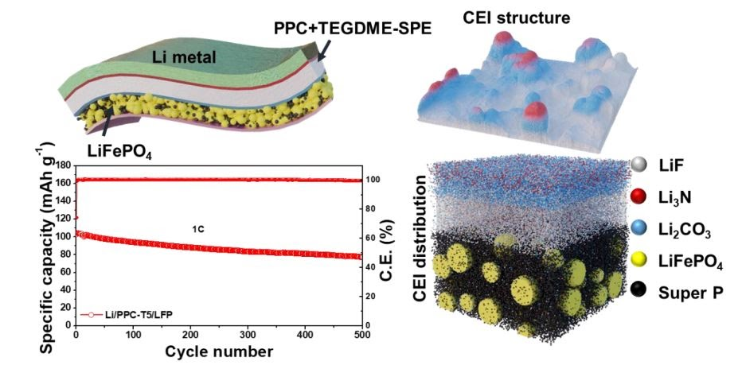

|
Research
My research focus on developing novel concepts of anode materials and solid-state electrolytes for better rechargeable batteries.
I am also interested in deeply understanding the mechanism behind these materials through the lens of computational chemistry.
Representative papers are bolded
|

|
10. Conductive metal organic framework mediated Sb nanoparticles as high-capacity anodes for rechargeable potassium-ion batteries
Aqsa Nazir, Hang T. T. Le, An-Giang Nguyen, Chan-Jin Park*
Submitted
|

|
9. In-Situ Synthesis of Antimony Nanoparticles Encapsulated in Nitrogen-Doped Porous Carbon Framework as Anode Material for Potassium-Ion Batteries
Rakesh Verma, An-Giang Nguyen, Pravin N. Didwal, Chae-Eun Moon, Jaekook Kim, Chan‐Jin Park*
Submitted
|

|
8. Stabilising Interface of Novel 3D-Hierarchical Porous Carbon for High-Performance Lithium–Sulfur Batteries
An-Giang Nguyen,
Hang T.T.Le, Rakesh Verma, Duc-Luong Vu, Chan-Jin Park*
Electrochimica Acta, 418, 2022, 140369
DOI: 10.1016/j.electacta.2022.140369 |
IF2021 = 6.901
|
|

|
7. Improving Cyclability of All-Solid-State Batteries via Stabilised Electrolyte–Electrode Interface with Additive in Poly(Propylene Carbonate) Based Solid Electrolyte
Pravin N. Didwal, Rakesh Verma, An-Giang Nguyen, Hari Vignesh Ramasamy, Gwi-Hak Lee, and Chan-Jin Park *
Advanced Science, 2022, 2105448
DOI: 10.1002/advs.202105448 |
IF2021 = 16.806
|

|
6. Boosting sodium-ion battery performance using an antimony nanoparticle self-embedded in a 3D nitrogen-doped carbon framework anode
An-Giang Nguyen,
Hang T.T.Le, Rakesh Verma, Duc-Luong Vu, Chan-Jin Park*
Chemical Engineering Journal, 429, 2022, 132359
DOI: 10.1016/j.cej.2021.132359 |
IF2021 = 13.273
|

|
5. Reinforcing effect of single-wall carbon nanotubes on the LiNi0.6Co0.2Mn0.2O2 composite cathode for high-energy-density all-solid-state Li-ion batteries
Min-Hong Woo, Pravin N. Didwal, Hee-Joong Kim, Jin-Sub Lim, An-Giang Nguyen, Chang-Soo Jin, Duck Rye Chang,* Chan-Jin Park*
Applied Surface Science, 568, 2021, 150934
DOI: 10.1016/j.apsusc.2021.150934 |
IF2021 = 6.707
|

|
4. Composite solid electrolyte comprising poly(propylene carbonate) and Li1.5Al0.5Ge1.5(PO4)3 for long-life all-solid-state Li-ion batteries
Bong-Jun Sung, Pravin N. Didwal, Rakesh Verma, An-Giang Nguyen, Duck Rye Chang, Chan-Jin Park*
Electrochimica Acta, 392, 2021, 139007
DOI: 10.1016/j.electacta.2021.139007 |
IF2021 = 6.091
|

|
3. Graphene analogue metal organic framework with superior capacity and rate capability as an anode for lithium ion batteries
Aqsa Nazir, Hang T. T. Le, An-Giang Nguyen, Chan-Jin Park*
Electrochimica Acta, 289, 2021, 138750
DOI: 10.1016/j.electacta.2021.138750 |
IF2021 = 6.091
|

|
2. SnSe nanocomposite chemically-bonded with carbon-coating as an anode material for K-ion batteries with outstanding capacity and cyclability
Rakesh Verma, Pravin N. Didwal, An-Giang Nguyen, Chan-Jin Park*
Chemical Engineering Journal, 1, 421, 2021, 129988
DOI: 10.1016/j.cej.2021.129988 |
IF2021 = 13.273
|

|
1. Biowaste Orange Peel‐Derived Mesoporous Carbon as a Cost‐Effective Anode Material with Ultra‐Stable Cyclability for Potassium‐Ion Batteries
Rakesh Verma, Yashabanta N. Singhbabu, Pravin N. Didwal, An-Giang Nguyen, Jaekook Kim, Chan‐Jin Park*
Batteries & Supercaps , 3 (10), 2020, 1099-1111
DOI: 10.1002/batt.202000068 |
IF2021 = 7.093
|
|

Design and source code from Jon Barron's website
|
|